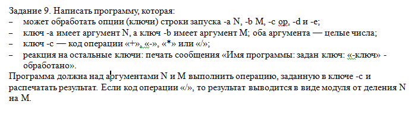
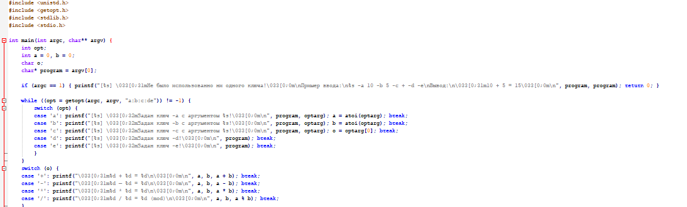
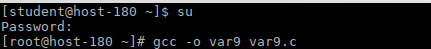
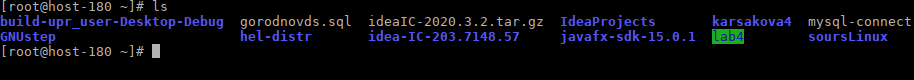
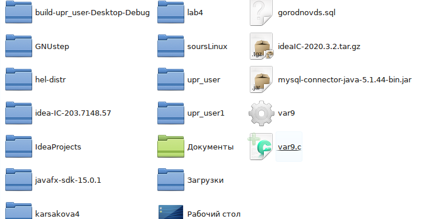
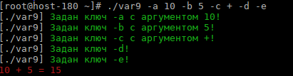
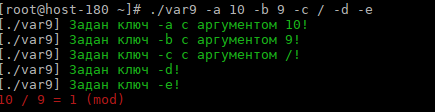

Разработка команды Linux
- Полученное задание:

- Код:

- Переносим var9.c в Домашнюю папку, после открываем терминал и переходим в root. С помощью команды gcc -o var9 var9.c транслируем исходник в программу.

- Вводим ls, смотрим содержимое, программа создана.


- Например N=10 M=5 op=+ Вводим: ./var9 -a 10 -b 5 -c + -d -e.

- Если используется деление, результат выводится по модулю.
